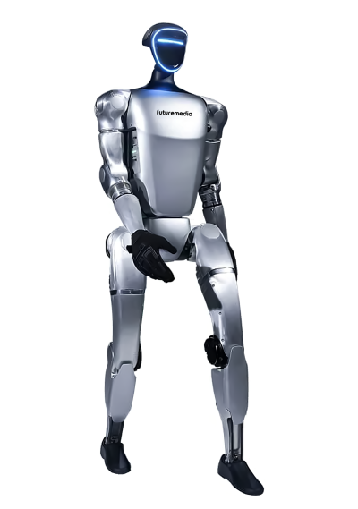
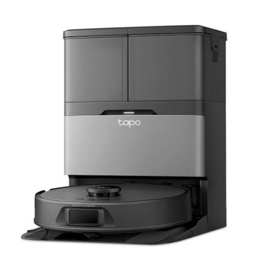

conheça os tipos de robos

robô humanoide
Os robôs humanoides são máquinas criadas para se parecer com os seres humanos, possuindo características como cabeça, braços e pernas. Eles podem utilizar inteligência artificial para conversar, reconhecer objetos e realizar tarefas. São usados em indústrias, hospitais, pesquisas e no atendimento ao público. Seu objetivo é ajudar as pessoas, facilitar atividades do dia a dia e contribuir para o avanço da tecnologia. 🤖
.jpeg)
robôs indrustriais
Os robôs industriais são máquinas utilizadas nas fábricas para realizar tarefas como montar produtos, soldar peças, pintar e transportar materiais. Eles ajudam a aumentar a produtividade, melhorar a precisão e reduzir os riscos para os trabalhadores. Com o avanço da tecnologia, esses robôs estão cada vez mais modernos e inteligentes. 🤖🏭

robôs domésticos
Os robôs domésticos são máquinas criadas para ajudar nas tarefas do dia a dia dentro de casa. Eles podem aspirar o chão, limpar piscinas e até cortar a grama. Alguns utilizam sensores e inteligência artificial para realizar suas funções de forma automática. Esses robôs facilitam a rotina das pessoas, economizam tempo e tornam as tarefas domésticas mais práticas. 🤖🏠
.jpeg)
robôs agrícolas
Os robôs agrícolas são máquinas utilizadas na agricultura para facilitar o trabalho no campo. Eles podem ajudar a plantar, colher alimentos, monitorar plantações e identificar pragas. Com o uso de sensores e inteligência artificial, esses robôs tornam a produção mais eficiente, economizam tempo e ajudam os agricultores a cuidar melhor das plantações. 🤖🌱